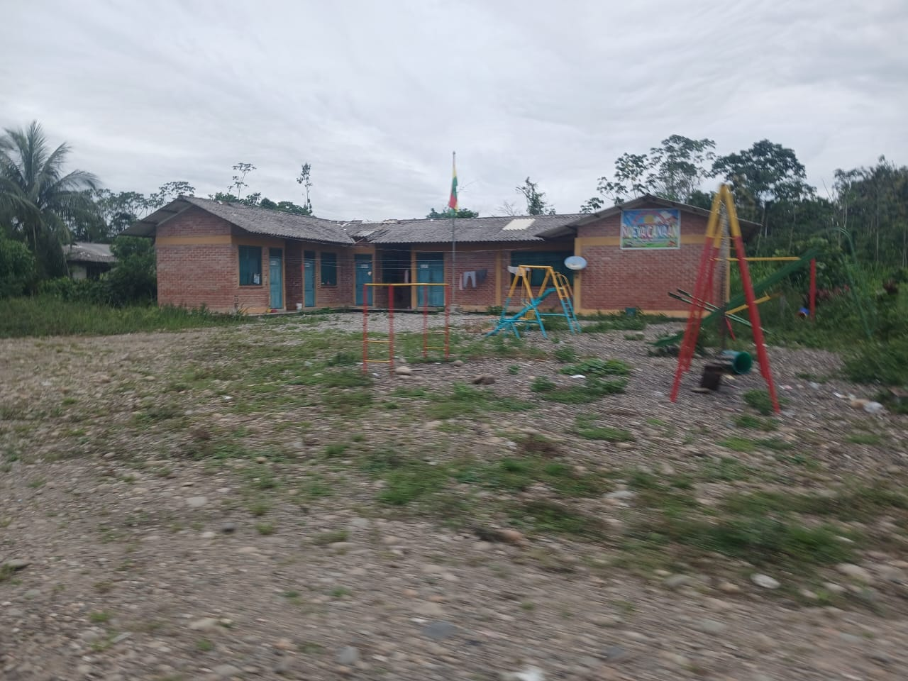
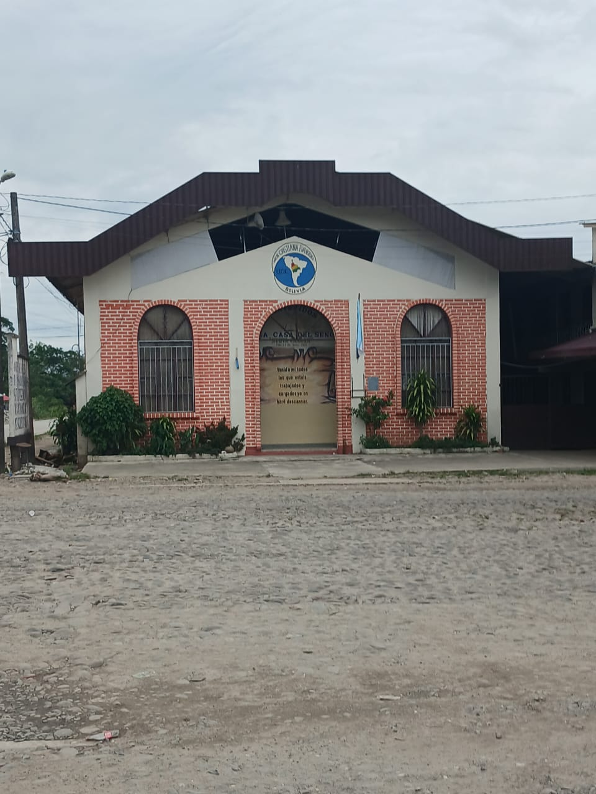

Bolivia · Comunidad
Senda B — Un lugar por descubrir
Bienvenidos a Senda B, una comunidad llena de historia, identidad, cultura y lugares que merecen ser conocidos. A través de esta galería queremos compartir nuestra belleza, nuestras instituciones, nuestros paisajes y la vida de nuestra gente con Bolivia y el mundo.
- Historia
- Instituciones
- Paisajes
- Cultura
Bienvenidos a Senda B
Una comunidad que se descubre con calma
Senda B es un lugar donde la vida transcurre entre casas, caminos de tierra, vegetación y espacios que reúnen a sus habitantes. Su iglesia, su guardería, su unidad educativa, sus canchas, sus empresas y sus paisajes forman parte de una historia cotidiana que merece ser contada y compartida.
Este portal nace para ordenar esas imágenes y darles el lugar que merecen. Cada fotografía se presenta con una descripción pensada como una guía turística: qué se ve, por qué importa para la comunidad y qué invita a conocer quien llega por primera vez.
La galería reúne las fotografías que la comunidad ha compartido y las ordena como un recorrido. Este es solo el comienzo de un camino por Senda B, nuestra comunidad, un lugar para conocer y descubrir.
Ver los lugares destacados
-
Historia e identidad
Los espacios que la comunidad reconoce como propios y que forman parte de su memoria.
-
Naturaleza
La vegetación, los cielos y el paisaje que rodean la vida diaria en Senda B.
-
Cultura viva
Las costumbres, celebraciones y expresiones que dan color a la vida comunitaria.
-
Su gente
Las familias y los espacios de encuentro que hacen de Senda B un lugar con vida propia.
La guardería
El lugar donde empieza la vida comunitaria
La guardería de Senda B es uno de los espacios comunitarios dedicados al cuidado y al desarrollo de los niños. Su edificio, de una sola planta y muros de ladrillo, recorre el frente con una franja amarilla, puertas y ventanas en tonos azules y una cubierta de calamina que protege los ambientes del sol y de la lluvia.
En el patio, todavía de tierra y grava, se levantan los juegos infantiles de colores junto al mástil con la bandera de Bolivia; sobre una de las paredes, un cartel con el nombre de la comunidad acompaña la entrada. Alrededor, las palmeras y los árboles recuerdan que Senda B es un pueblo rodeado de naturaleza.
Conocer la guardería es entender una parte esencial de la vida de Senda B: el cuidado de los más pequeños y el esfuerzo de una comunidad por ofrecerles un espacio propio.
Senda B: nuestra comunidad,
un lugar para conocer y descubrir.
Recorriendo Senda B
Lugares que cuentan nuestra historia
La iglesia y la guardería, la unidad educativa, las canchas, las empresas, el río y los caminos forman parte del paisaje cotidiano de la comunidad. Cada lugar tiene su propia presentación, pensada para quien quiere conocerlo.
Cargando los lugares de Senda B…
Galería fotográfica
Senda B en imágenes
Explora las fotografías por categoría. Haz clic en cualquier imagen para verla en grande y leer su descripción completa.
Cargando categorías…
Todavía no hay fotografías aquí
Prueba con otra palabra o selecciona otra categoría para seguir recorriendo la galería de Senda B.
Ubicación
¿Dónde estamos?
La comunidad de Nueva Canaán – Senda B está en el municipio de Chimoré, departamento de Cochabamba, Bolivia. Este es el punto exacto: el mapa y el botón «Cómo llegar» te guían hasta la comunidad.
- Comunidad Nueva Canaán – Senda B
- País Bolivia
- Departamento Cochabamba
- Provincia Carrasco
- Municipio Chimoré
- Coordenadas -16.95745, -65.14606
Cómo llegar. El marcador del mapa señala el punto exacto de la comunidad. Pulsa «Cómo llegar» y Google Maps abrirá la ruta desde donde te encuentres.
Preparando el mapa…
Comunidad Nueva Canaán – Senda B · Google Maps Ver en Google Maps
Sigamos en contacto
Comparte Senda B con el mundo
Cada persona que conoce nuestra comunidad ayuda a que su historia llegue más lejos. Comparte esta página o escríbenos cuando los canales oficiales estén disponibles.
Contacto de la comunidad
- Los canales oficiales de contacto están pendientes de confirmación.
¿Tienes fotografías o información de Senda B que quieras compartir? Los datos de contacto se habilitarán aquí en cuanto la comunidad los proporcione.